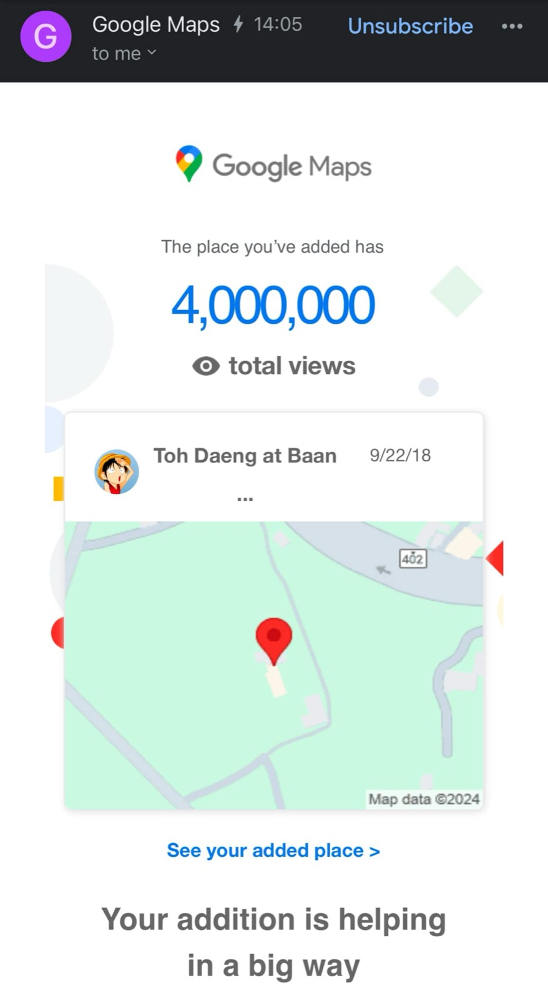

2567 · รางวัล · เหตุการณ์
หกปีของโต๊ะแดงบ้านอาจ้อ — ยังไม่มั่นใจว่าจะรอดไปได้อีกนานเท่าไหร่

4,000,000 google views แล้ววว 😇❤️
6 ปีผ่านไปไวเหมือนโกหก นับจากวันที่เปิดตัวโต๊ะแดงบ้านอาจ้อ วันที่ 11 เดือน 12 ปี 2018 📌ยังจำภาพวันนั้นได้ อาก๊องเล่นแอคคอร์เดี้ยนหนวยนุ้ย กับวงดนตรีเฉพาะกิจ 🎼 จี้ก็เดินแซวแขกหัวเราะกันทันเทือนทั้งร้าน 🤣 ครูกบผัดรัวๆ อยู่ในครัว 🔥 โก๊โอ๊กขับรถเหวนซื้อของทั้งหลาด 🚗 โก๊อ๊อดกับมะก็ยกจานเสิร์ฟข้าวกันล้วนหรอย 😅 อาม่า อาเจกกะที่บ้านก็มานั่งกินข้าวด้วยกัน 🥰 คิดถึงความสุขวันนั้นมากมาย ❤️
มาวันนี้โต๊ะแดงบ้านอาจ้อ เดินทางมาแสนไกล แต่ก็ยังไม่มั่นใจว่าจะรอดไปได้อีกนานเท่าไหร่ 😓 คำนึงของอาก๊องยังก้องอยู่ในหัวตลอด ขอให้ #กตัญญู กับทุกสิ่งที่สร้างเรามา แล้วเค้าจะช่วยให้เราแคล้วคลาดปลอดภัย ประสบแต่ความเจริญยิ่งๆ ขึ้นไป 😇❤️
ขอบคุณทั้งลูกค้า และผู้ใหญ่ใจดีที่เอ็นดูทีมงานมาตลอด ❤️ ขอบคุณทีมงานทุกๆคน ทีีช่วยกันพัฒนา ดูแล รักษาคุณภาพในทุกๆ วัน ❤️ ขอบคุณสิ่งศักดิ์สิทธิ์ที่ให้เราอยู่ถูกที่ถูกทาง ทำงานราบรื่น แคล้วคลาดปลอดภัย ❤️
ไม่รู้ว่าอีก 1 ล้านวิวถัดไป เราจะถึงเมื่อไหร่ แล้วทีมเราจะเจออะไรที่ท้าทายกันอีกบ้าง แต่สัญญาจะทำให้ดีที่สุด 😇
สุดท้ายนี้ ฝากโปรเจค 2 น้องใหม่ ที่พร้อมจะเดินทางไปทุกที่ ขอให้รวมแล้วดี แล้วเราจะไป ❤️
#tohdaeng กับข้าว #michelin พร้อมปรุง 😋
#longdaeng น้ำหอมปลุกเสก พร้อมปัง ✨
และท้ายสุด #chefego มื้ออาหารปริศนา ไม่รู้จะได้กินอะไร แต่ทุกมื้อมาพร้อมบุญน้าาา 😇
#บ้านอาจ้อ ❤️